Performance & Memory Optimization
Master Profiling, Numeric Downcasting, Categorical Encoding, SIMD Vectorization, and Chunked Streaming for Production Data Pipelines
1. Introduction — Why Performance and Memory Optimization Matter
Jab aap Pandas sikhna shuru karte hain, to 100 ya 500 rows ke toy datasets par har operation instant lagta hai. Lekin real-world production systems me data scale dramatically grow karta hai:
- College ERP Systems: Ek university me 5,000 students ka data badhte-badhte 500,000 historical exam aur attendance logs ban jata hai.
- E-Commerce Platforms: Amazon ya Flipkart jaise platforms par roz millions of clicks, add-to-carts, aur orders generate hote hain.
- IoT Sensor Telemetry: Industrial smart factory sensors har second temperature aur vibration log karte hain, jo din me 10+ GB CSVs produce karte hain.
Agar aap unoptimized code likhenge, to script ghanto chalegi ya system MemoryError: Out of Memory (OOM) crash ho jayega. Optimization ka matlab blind shortcuts lena nahi hai, balki system ke hardware resources (CPU aur RAM) ko smartly utilize karna hai.
"Premature optimization is the root of all evil" (Donald Knuth). Pehle readable aur 100% mathematically correct code likhein. Uske baad measure karein ki bottleneck kahan hai. Agar ek fast code galat analytics ya biased scores generate kar raha hai, to uski high speed bilkul bekar hai!
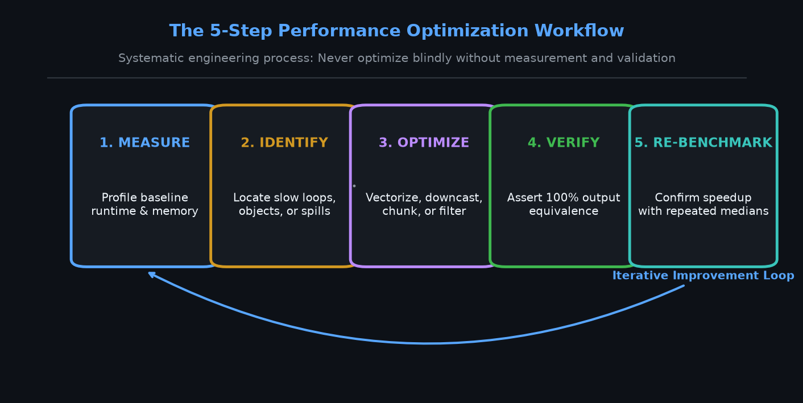
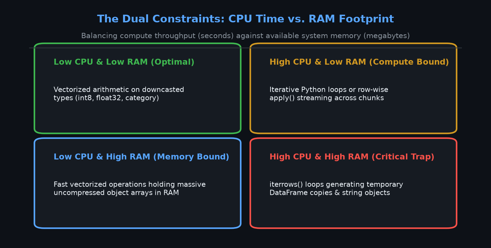
Two Introductory Examples: The Same Task with Vastly Different Performance
Dekhiye kaise ek simple analytical requirement (students ke marks add karna) do alag approaches me 9,000x speed difference create karta hai:
Example A (Anti-Pattern): Python for-loop with iloc indexing
Example B (Best Practice): Vectorized C-Level Column Addition
2. Measuring Execution Time Correctly — perf_counter, timeit, and Warm-Ups
Bohot se developers optimization karte waqt sirf ek baar execution run karke time note karte hain. Lekin ek single measurement bohot misleading ho sakti hai! Kyun?
- Cold Start & JIT Warm-Up: Pehli baar code execute hone par Python ko modules import karne padte hain aur OS ko disk se page cache load karna padta hai.
- CPU Frequency Scaling & Load: Computer ka CPU background tasks, antivirus scans, ya browser tabs ke hisab se clock speed fluctuate karta hai.
- Garbage Collection (GC) Pauses: Agar kisi run ke dauran Python ka cyclic garbage collector trigger ho jaye, to execution time achanak 2x ya 3x spike kar jata hai.
Isliye professional data engineering me hum hamesha repeated benchmark runs execute karte hain aur Median (beech ki robust value) report karte hain, na ki simple average jo outliers se distort ho sakti hai.
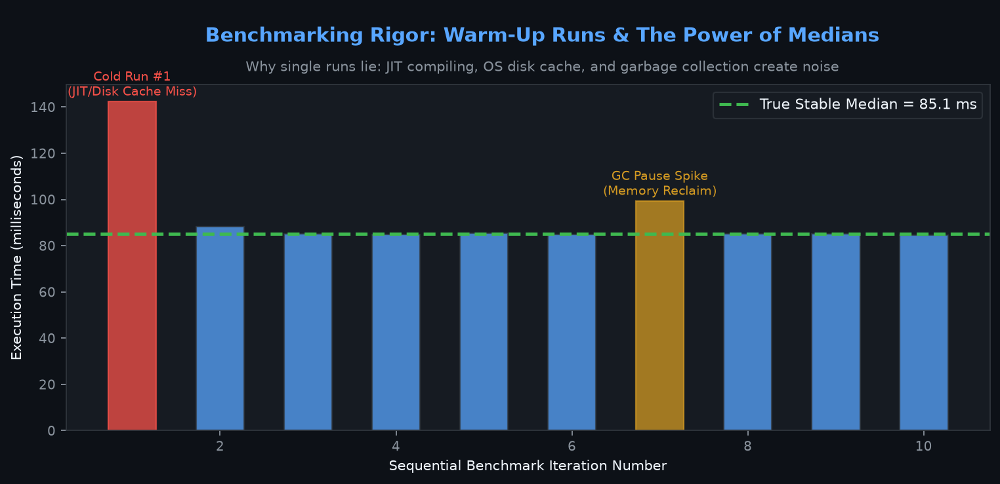
| Measurement Tool | Recommended Scenario | Key Advantages & Caveats |
|---|---|---|
time.perf_counter() |
Complete end-to-end data pipelines & ETL scripts | Highest available system timer resolution; unaffected by wall-clock daylight saving adjustments. |
timeit.timeit() |
Micro-benchmarks for small single-line expressions | Runs thousands of loops automatically disabling GC; can artificially hide real memory pressure. |
%timeit (Jupyter / IPython) |
Interactive exploratory profiling | Automatically selects loop count and reports standard deviation; not available in plain .py scripts. |
Code Example 1 (College Analytics): Measuring Marks Addition with Warm-Up & Median
Code Example 2 (E-Commerce Analytics): Revenue Calculation Benchmark
3. Measuring DataFrame Memory Usage — Shallow vs. Deep Inspection
Jab aap df.info() call karte hain, by default Pandas sirf shallow memory inspection karta hai. Shallow inspection me Pandas sirf C-level pointer array ke bytes count karta hai aur actual Python heap memory (jahan strings aur objects store hote hain) ko ignore kar deta hai!
Is wajah se beginners sochte hain ki unka DataFrame sirf 150 KB ka hai, jabki reality me heap par 1 MB se zyada memory allocate ho chuki hoti hai!
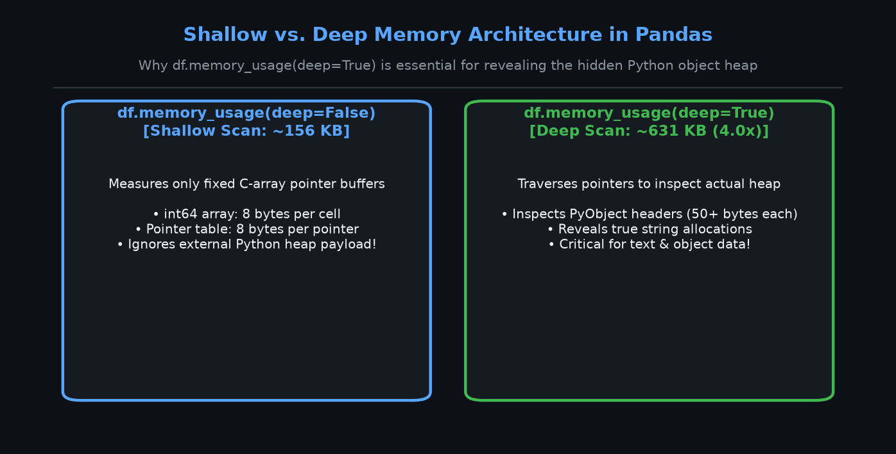
deep=True traverses pointers to count the full Python object heap payload.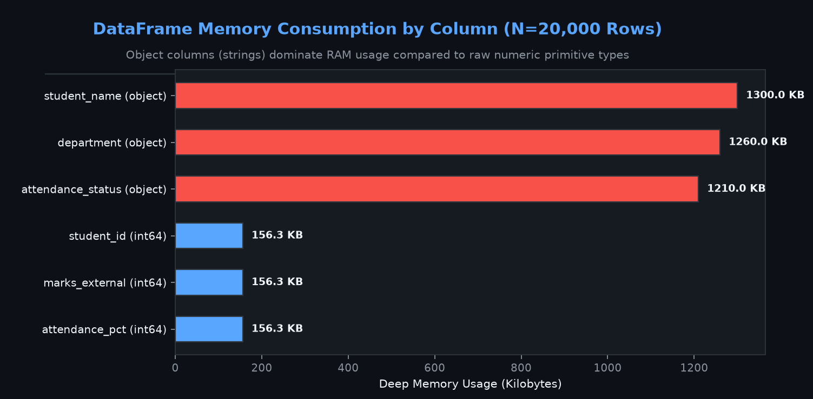
| Method Call | Deep Inspection? | What It Measures | When to Use |
|---|---|---|---|
df.memory_usage() |
No (deep=False) |
Fixed pointer table (8 bytes per row) | Fast quick check for pure numeric DataFrames. |
df.memory_usage(deep=True) |
Yes | Pointer table + actual string heap contents | Mandatory for accurate memory audits of text & object columns. |
df.info(memory_usage="deep") |
Yes | Per-column datatypes + deep memory total | Human-readable terminal summary. |
Code Example 1: Shallow vs. Deep Memory on 5,000 College Students
Code Example 2: Per-Column Deep Memory Audit Function
Observation: Do object string columns (name aur department) milkar total DataFrame memory ka 87.5% hissa occupy kar rahe hain! Yahi par optimization ka sabse bada scope hota hai.
4. Optimizing Numeric Data Types — Safe Downcasting and Boundaries
By default, jab Pandas CSV read karta hai ya Python lists ko DataFrame me convert karta hai, to har integer ko int64 (8 bytes) aur har decimal ko float64 (8 bytes) allocate karta hai.
Lekin sochiye:
- College ka
semesternumber sirf 1 se 8 hota hai. 8 tak ginne ke liye 8 bytes (±9 quintillion range) allocate karna shuddh resource waste hai! Yeh easily 1 byte keint8me fit ho sakta hai. - Exam
marks0 se 100 tak hote hain, jo 1 byte keint8yauint8me fit ho jate hain.
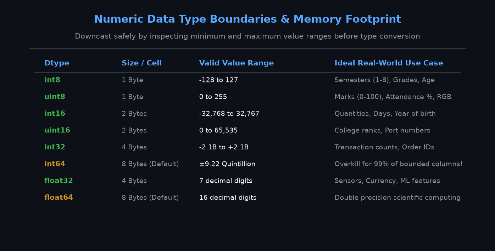
Bina range check kiye downcast mat karein! Agar aap 200 ko int8 (maximum limit 127) me convert karenge, to silent integer overflow ho jayega aur number wrap hokar negative ban jayega! Always inspect df['col'].min() aur df['col'].max() before downcasting.
| Numeric Target | Pandas Function | Safe Range | RAM Savings vs int64/float64 |
|---|---|---|---|
int8 |
pd.to_numeric(s, downcast='integer') |
-128 to 127 | 87.5% Less RAM (1 Byte vs 8 Bytes) |
uint8 |
pd.to_numeric(s, downcast='unsigned') |
0 to 255 | 87.5% Less RAM (1 Byte vs 8 Bytes) |
int16 |
pd.to_numeric(s, downcast='integer') |
-32,768 to 32,767 | 75.0% Less RAM (2 Bytes vs 8 Bytes) |
float32 |
pd.to_numeric(s, downcast='float') |
7 decimal digits precision | 50.0% Less RAM (4 Bytes vs 8 Bytes) |
Code Example 1 (College Dataset): Downcasting Marks & Semesters (75.0% RAM Savings)
Code Example 2 (E-Commerce): Bounded Quantity & Discount Downcasting
5. Optimizing Text and Categorical Columns — The 98% RAM Drop
Real-world datasets me repeated text values sabse zyada memory consume karte hain. For example, ek e-commerce company ke 1,000,000 orders me delivery city sirf 8 metro cities (Mumbai, Delhi, Bengaluru, etc.) me se ek hoti hai.
Agar yeh column object string format me rahe, to Python har row ke liye ek poora 50+ byte ka PyUnicode object banata hai. Iske bajaye jab aap ise category dtype me convert karte hain, to Pandas internal Dictionary Encoding use karta hai:
- Unique string names sirf ek baar store hote hain ek lookup table (categories index) me.
- Main column me har row sirf 1 byte ka small integer code (0 for Mumbai, 1 for Delhi, etc.) store karti hai!
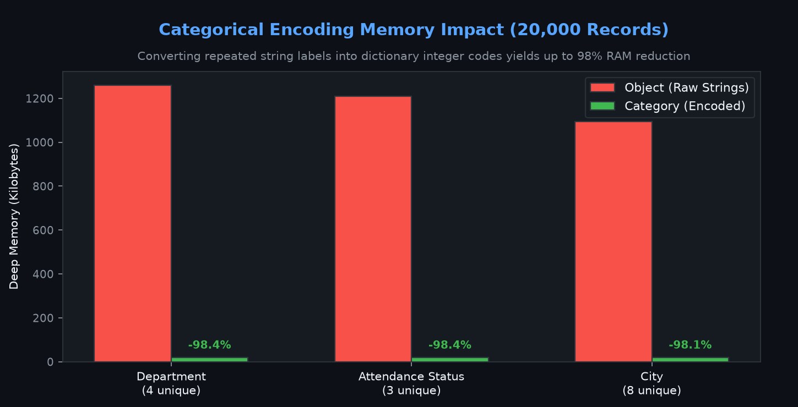
Categorical conversion tabhi beneficial hai jab column ki Cardinality (Unique values count) low ho (e.g. Unique values < 5% of total rows). Agar aap user_id, email_address, ya transaction_uuid jaise unique identifiers ko category me convert karenge jahan har row unique hai, to category lookup table ka overhead उल्टा memory badha dega!
Code Example 1: 20,000 E-Commerce Cities — 98.1% Memory Reduction
Code Example 2: Inspecting Internal Category Codes
6. Vectorization vs. Python Loops — The 9,000x Performance Leap
Agar aap standard programming languages (C, C++, Java) se aa rahe hain, to aapki aadat hoti hai har row par for loop chalakar calculation karne ki. Lekin Python ek interpreted language hai. Jab aap Pandas DataFrame par standard Python loop chalate hain, to har single iteration me Python Virtual Machine (PVM) ko:
- Data type inspect aur dynamically unbox karna padta hai.
- Row-level Series ya tuple object create karna padta hai.
- Function call dispatch karna padta hai.
- Naye objects ko memory heap par allocate aur garbage collect karna padta hai.
Vectorization me calculation Python interpreter ke bajaye low-level highly optimized C / Fortran compiled code me execute hoti hai. Modern CPUs ke SIMD (Single Instruction, Multiple Data) hardware registers ek hi clock cycle me multiple numbers ko parallel me add ya multiply kar dete hain!
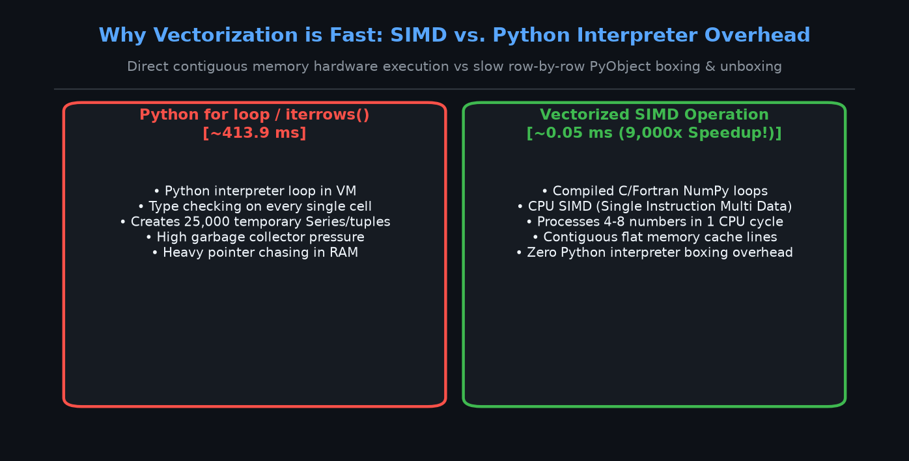
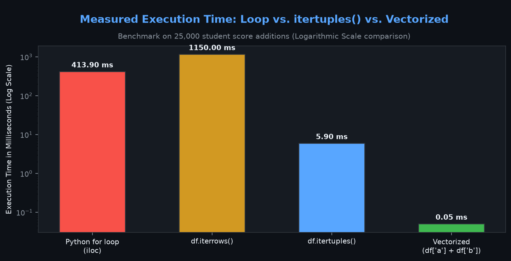
| Method | Measured Runtime (N=25,000) | Relative Speed | When to Use |
|---|---|---|---|
Vectorized Expression (df['a'] + df['b']) |
0.05 ms | Baseline (1.0x — Fastest) | Always your #1 Default Choice! |
df.itertuples(index=False) |
5.90 ms | ~130x Slower than Vectorized | Complex stateful logic where row results depend on previous rows and cannot be vectorized. |
Python for loop (with iloc) |
413.90 ms | ~9,000x Slower | Anti-pattern in production! Avoid at all costs. |
df.iterrows() |
1,150.00 ms | ~23,000x Slower | Worst performer! Generates a full Series object for every single row. |
Code Example 1 (College Benchmark): 4 Iteration Strategies Compared on 25,000 Students
Code Example 2 (E-Commerce): Vectorized Revenue & Surcharge Calculation
7. apply(), map(), and Built-in Methods — Choosing the Right Tool
Bohot se beginners sochte hain ki apply() ek vectorized method hai. Nahi! DataFrame.apply(..., axis=1) internally ek hidden Python loop chalata hai jo har row ko alag-alag Python Series me convert karta hai.
Lekin apply() aur map() galat nahi hain. Unka sahi use samajhna zaroori hai:
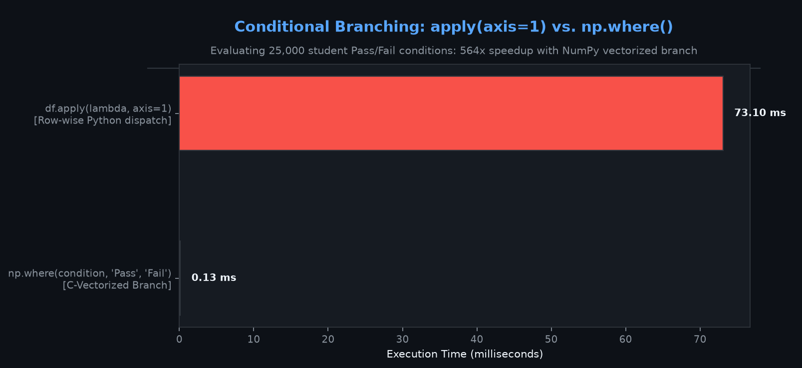
df.apply(axis=1) takes 73.1 ms, while np.where() completes in 0.13 ms (564.2x speedup!).| Technique | Target Axis / Object | Execution Mechanism | Best Suitable Use Case |
|---|---|---|---|
Series.map(dict) |
Single Column (Series) | C-optimized hash table lookup | Mapping codes to labels (e.g. dept_id to dept_name). |
np.where() / np.select() |
Multiple Columns (Row conditions) | Compiled C vectorized array branching | If-else conditions across columns (Pass/Fail, Discount tiers). |
Series.apply(func) |
Single Column (Series) | Fast Python loop over scalars | Complex regex text parsing or custom formatting. |
df.apply(func, axis=1) |
Entire DataFrame (Row-wise) | Slow Python loop with Series creation | Only when no vectorized or NumPy solution exists! |
Code Example 1: 564x Speedup Replacing apply(axis=1) with np.where()
Code Example 2: Ultra-Fast Dictionary Mapping with Series.map()
8. Avoiding Unnecessary Copies and Copy-on-Write (CoW) in Pandas 2.x
Bohot se pipelines me memory isliye exhaust hoti hai kyunki developer har transformation step par ek poora naya DataFrame clone kar leta hai:
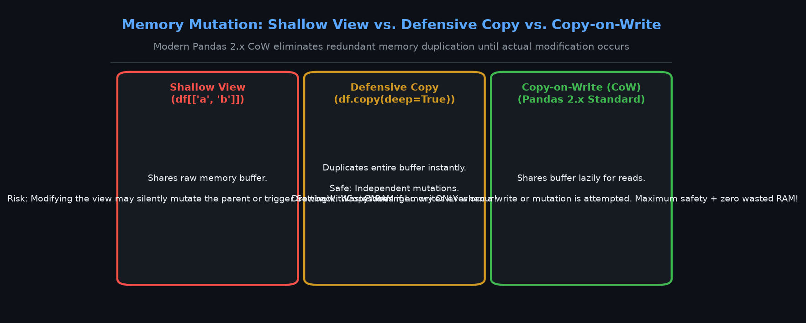
Understanding Copy-on-Write (CoW) in Modern Pandas
Older Pandas me slicing (sub_df = df[['a', 'b']]) karne par yeh uncertain hota tha ki result ek view hai ya copy, jisse badnaam SettingWithCopyWarning trigger hoti thi. Developers warning se bachne ke liye har jagah .copy() likhne lage, jisse RAM waste ho gayi.
Pandas 2.0+ me Copy-on-Write (CoW) introduce kiya gaya hai. Jab CoW active hota hai:
- Subsetting ya slicing karne par Pandas zero bytes copy karta hai (dono DataFrames internally same memory share karte hain).
- Jaise hi aap kisi ek DataFrame ko mutate (modify) karte hain, sirf usi moment par Pandas silently modified column ko clone karta hai!
Code Example 1: Selecting Only Required Columns to Avoid Memory Waste
9. Efficient Filtering, Sorting, and Aggregation — Filter Early, Aggregate Smart
Jab aap complex multi-table queries ya aggregations likhte hain, to operations ka sequence performance par drastic impact daalta hai.
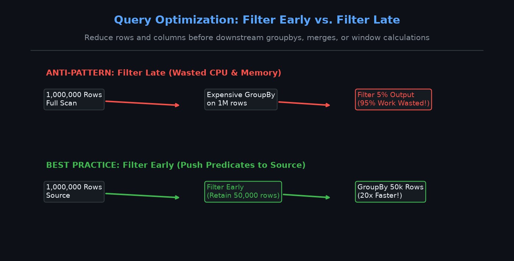
Three Golden Rules for Fast Aggregations
- Filter Early (Predicate Pushdown): Hamesha rows ko pipeline ke shuruat me filter karein. Agar aapko sirf October 2026 ke orders chahiye, to pehle filter karein, fir merge ya groupby karein!
- Select Columns Before GroupBy: Kabhi bhi
df.groupby('dept').mean()mat likhein agar aapko sirf marks ka mean chahiye. Hameshadf.groupby('dept')['marks'].mean()likhein taaki Pandas dusre columns ko aggregate na kare. - Use sort=False in GroupBy: By default Pandas groupby keys ko sort karta hai. Agar aapko sorted order nahi chahiye, to
df.groupby(..., sort=False)pass karein taaki sorting algorithm bypass ho sake.
Code Example 1: GroupBy with sort=False and Column Selection
10. Chunked Processing for Large CSV Files — Scaling Beyond RAM Limits
Aapke computer me 8 GB ya 16 GB RAM ho sakti hai. Lekin agar client aapko ek 25 GB CSV file dede, to standard pd.read_csv("huge_file.csv") call karne par aapka computer turant Out of Memory (OOM) crash ho jayega.
Is problem ka standard industry solution hai Chunked Processing via chunksize parameter. Poori file ko ek sath memory me load karne ke bajaye, Pandas file ko discrete manageable chunks (jaise 50,000 rows at a time) me stream karta hai.
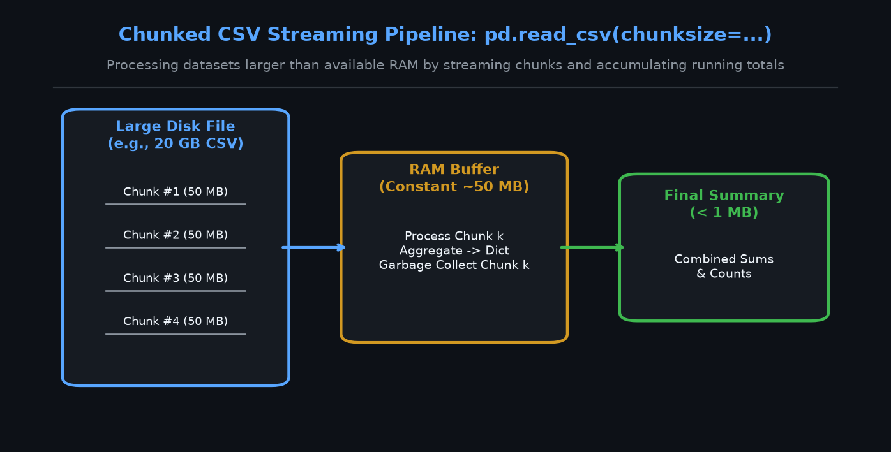
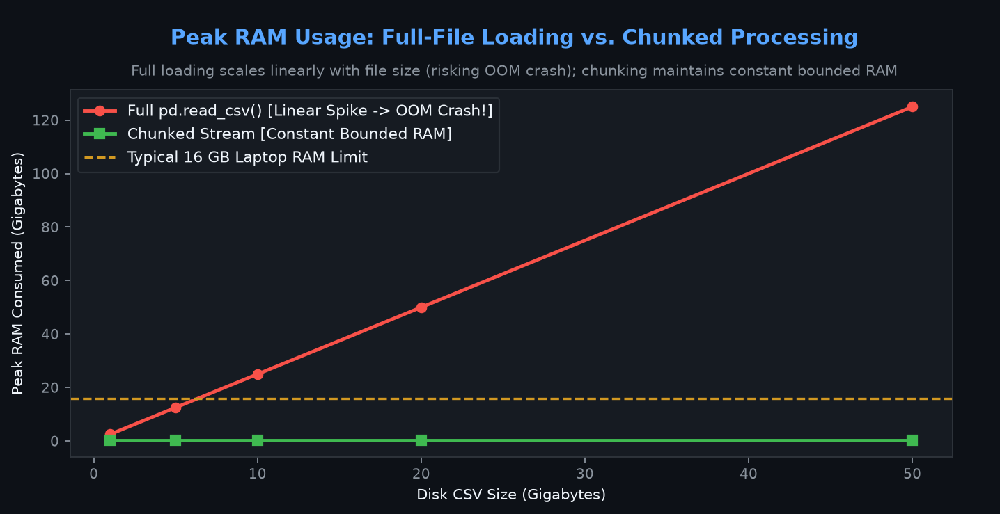
Bohot se beginners chunking code aise likhte hain:
Yeh chunking ke poore purpose ko barbaad kar deta hai! Agar aap saare chunks ko list me store karenge, to memory to duplicate hokar aur jaldi crash hogi! Golden Rule: Har chunk se sirf partial aggregates (sum, count) nikaalein aur chunk ko discard kar dein.
Code Example 1 (E-Commerce): Stream Aggregation Across 30,000 Orders
Code Example 2 (College): Computing Global Weighted Average Marks from Chunks
11. Efficient CSV Reading — usecols, Explicit Dtypes, and nrows
Jab aap pd.read_csv() call karte hain bina arguments ke, to Pandas ko file ki pehli 1,000 rows ko inspect karke datatypes guess (infer) karne padte hain. Yeh type inference process CPU heavy hota hai aur aksar galat large types (int64, float64, object) choose karta hai.
Aap CSV loading ko 2x se 4x fast aur 60% zyada memory-efficient bana sakte hain do simple techniques se:
usecols=list: Sirf wahi columns disk se read karein jo aapke analysis ke liye zaroori hain. Unused columns disk par hi chhod diye jaate hain!dtype=dict: Pandas ko pehle se bata dein ki kis column ka kya optimized datatype hai. Isse type inference bypass ho jata hai aur memory me direct small types allocate hote hain!
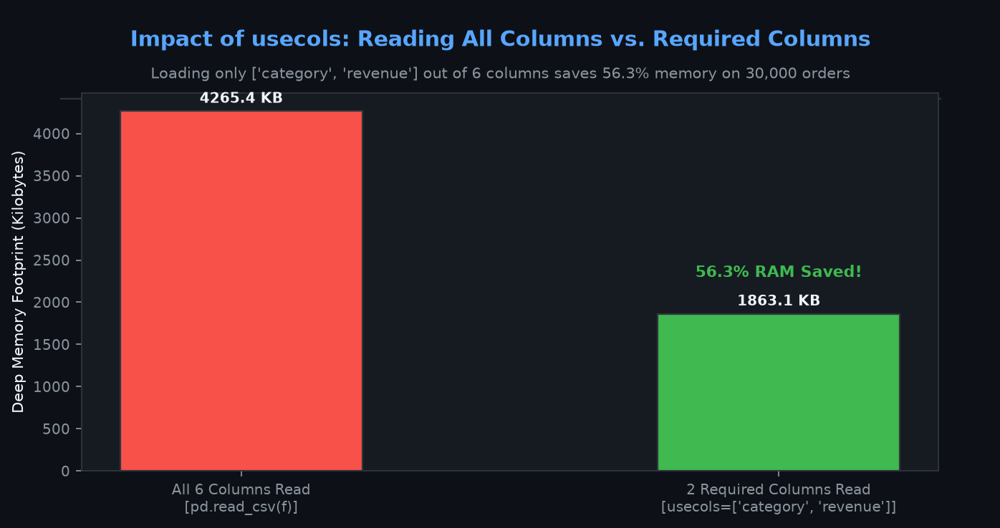
usecols on 30,000 orders: Loading only required columns saves 56.3% memory (down from 4,265.4 KB to 1,863.1 KB).Code Example 1: Schema-Driven CSV Read with Explicit Dtypes
Code Example 2: Lightning Fast Inspection with nrows
12. Efficient Missing-Value and Duplicate Handling — Streamlined Cleaning
Data cleaning me sabse zyada CPU cycles tab waste hoti hain jab developer baar-baar poore DataFrame ko scan karta hai: pehle df.isna().sum(), fir df.dropna(), fir df.fillna(), fir df.drop_duplicates().
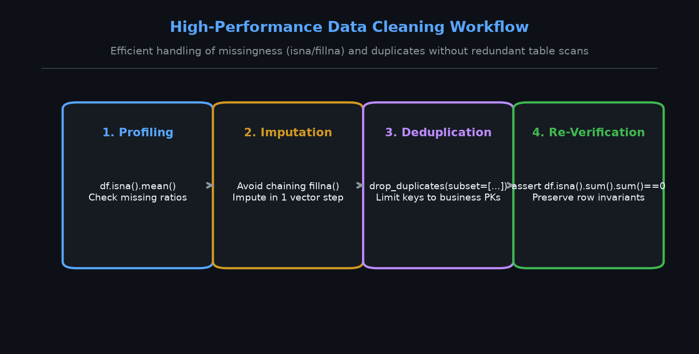
Optimization Tips for Cleaning
- Limit Deduplication Keys:
df.drop_duplicates()bina arguments ke har single column compare karta hai. Hameshasubset=['order_id']yasubset=['student_id', 'exam_code']specify karein taaki hashing fast ho. - Avoid Chained fillna: Alag-alag columns par bar-bar
df['a'] = df['a'].fillna(...)likhne ke bajaye dictionary mapping pass karein:df.fillna({'a': 0, 'b': 'Unknown'}).
Code Example 1: Streamlined Deduplication on Primary Key Subset
13. Choosing Appropriate Algorithms & Data Structures — Lists vs. Sets vs. Dicts
Bohot se slow Pandas code ka reason Pandas ka defect nahi hota, balki underlying Python data structures ka galat selection hota hai. Sabse common example hai Membership Testing (isin check).
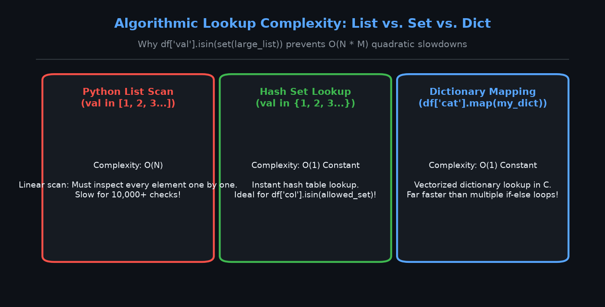
| Lookup Operation | Underlying Data Structure | Time Complexity | Performance Impact on 100,000 Rows |
|---|---|---|---|
df['id'].isin(large_list) |
Python list |
\(O(N imes M)\) Linear | Very Slow! Must scan every list item sequentially for each row. |
df['id'].isin(set(large_list)) |
Python set |
\(O(N imes 1)\) Constant | Instantaneous! Hash table bucket lookup in \(O(1)\) time. |
df['code'].map(dict_lookup) |
Python dict |
\(O(N imes 1)\) Constant | Compiled C Hash Lookup! Far faster than multiple if-else chains. |
Code Example 1: Set-Based Filtering for High-Speed Membership Testing
14. Benchmarking Fairly and Interpreting Results — Scaling Curves
Ek reproducible aur trustworthy benchmark create karne ke liye kuch scientific rules follow karna mandatory hota hai. Agar aap do functions compare kar rahe hain lekin unke inputs alag hain, ya ek function pehle run hua aur dusra cold cache me chala, to benchmark invalid ho jayega.
- Identical Input Data: Dono implementations ko exact same input DataFrame provide karein (same row count, dtypes, and random seed).
- Verify Output Equivalence First: Timing measure karne se pehle hamesha
assert np.array_equal(...)yaassert df1.equals(df2)run karein! - Discard the Cold Run: Pehle ek dummy warm-up iteration execute karein taaki disk aur memory buffers initialize ho jayein.
- Use Repeated Runs & Median: Kam se kam 3 se 5 runs lein aur
np.median()report karein taaki background OS pauses filter ho jayein. - Test Across Multiple Scales: Sirf 100 rows par benchmark karke generalize mat karein; 1,000, 10,000, aur 100,000 rows par scale test karein.
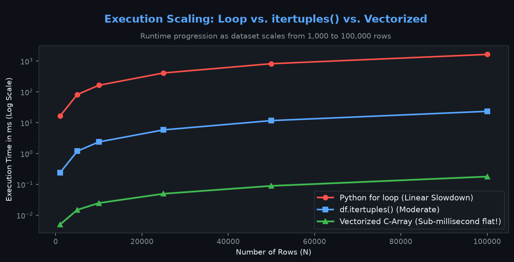
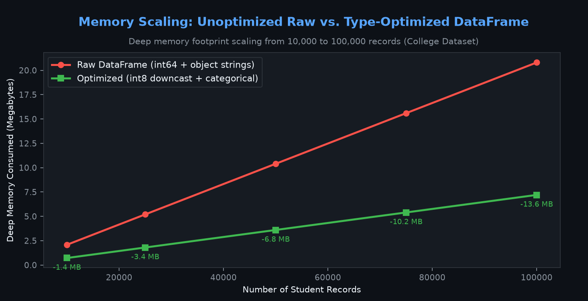
15. Practical Optimization Decision Tree and 10-Point Checklist
Production environment me optimization karte waqt confusion se bachne ke liye niche diye gaye decision tree aur systematic troubleshooting matrix ko follow karein.
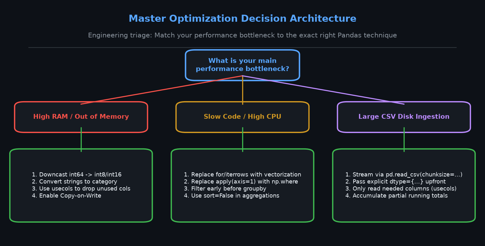
The 10-Point Production Optimization Checklist
- Correctness First: Kya mera current code 100% correct analytical results de raha hai?
- Profile Before Guessing: Kya maine
time.perf_counter()aurdf.memory_usage(deep=True)se bottleneck measure kiya hai? - Drop Unused Columns: Kya mai query ke shuruat me sirf required columns select kar raha hoon?
- Eliminate Python Loops: Kya koi
forloop yaiterrows()hai jise vectorized math yanp.where()se replace kiya ja sakta hai? - Downcast Numeric Types: Kya integer columns (semesters, marks, age)
int8/int16me downcast kiye gaye hain? - Encode Low-Cardinality Text: Kya repeated strings (city, department, status)
categorydtype me convert hain? - Filter Early: Kya filter predicates downstream joins aur groupbys se pehle apply ho rahe hain?
- Stream Large CSVs: Agar CSV RAM se bada hai, to kya mai
chunksizeuse karke stream kar raha hoon? - Avoid Defensive Copies: Kya maine unnecessary
.copy()calls hata diye hain aur Copy-on-Write consider kiya hai? - Benchmark & Assert: Kya maine repeated medians measure karke verify kiya hai ki naya code faster hai aur output exactly identical hai?
| Bottleneck / Symptom | Root Cause | Recommended Fix | Important Caution / Gotcha |
|---|---|---|---|
MemoryError during pd.read_csv() |
CSV file size exceeds available physical RAM. | Use pd.read_csv(..., chunksize=10000) and stream. |
Do not append chunks to a list; accumulate running totals. |
| Huge RAM on text columns | Python creates 50+ byte PyUnicode objects per cell. |
Convert to df['col'].astype('category'). |
Only use if cardinality is low (<5% unique rows). |
| Excessive numeric RAM | Default 64-bit integers and floats (8 bytes/cell). | Use pd.to_numeric(..., downcast='integer'). |
Always check min() and max() to avoid overflow. |
| Sluggish row calculation | Using Python for loop or iterrows(). |
Replace with direct vectorized column arithmetic. | Ensure both columns have compatible indices. |
| Slow if-else logic | Using df.apply(lambda, axis=1). |
Replace with np.where(cond, val1, val2). |
For multiple conditions, use np.select(). |
| Slow GroupBy aggregation | Pandas automatically sorts keys and aggregates all cols. | Use df.groupby(col, sort=False)[target].sum(). |
Only disable sort if output order is not required. |
| Slow list membership filter | Using df['id'].isin(my_list) with large list. |
Convert list to hash set: df['id'].isin(set(my_list)). |
Hash set lookup evaluates in \(O(1)\) constant time. |
| Wasted memory on CSV load | Loading all 50 columns when only 3 are needed. | Pass usecols=['col1', 'col2'] to read_csv(). |
Unused columns are skipped directly at the C disk reader. |
| Redundant RAM duplication | Chaining unnecessary .copy() statements. |
Enable Copy-on-Write: pd.options.mode.copy_on_write = True. |
Verify compatibility with third-party libraries. |
| Slow dictionary mapping | Using custom function loop instead of built-in mapper. | Use df['col'].map(dict_lookup). |
Unmapped keys become NaN; use fillna() if needed. |
16. Guided Capstone Case Study A — College Performance Optimizer
Is guided case study me hum ek real university ke examination aur attendance management system ka dataset optimize karenge. Dataset me 20,000 student records hain jisme demographic details, semester numbers, marks, aur attendance status recorded hain.
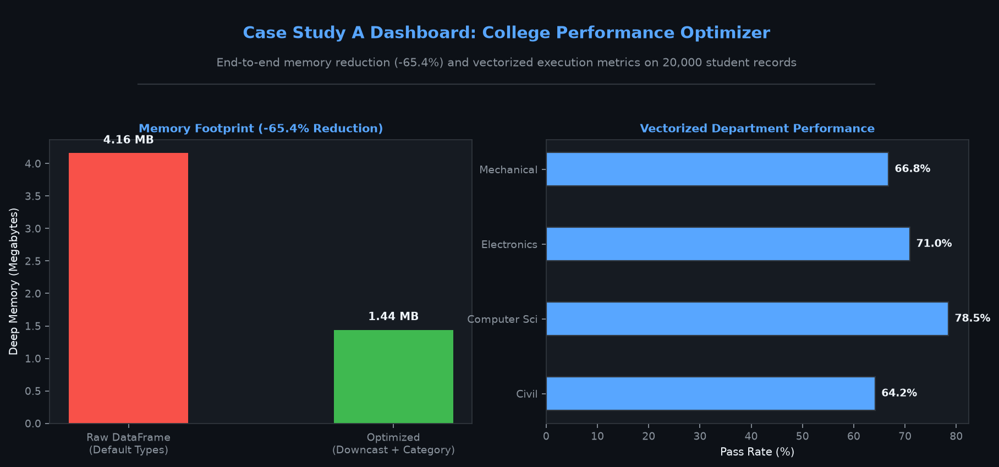
Full Verified Python Pipeline — College Performance Optimizer
17. Guided Capstone Case Study B — E-Commerce Large Dataset Analyzer
Is second guided case study me hum 30,000 transaction orders ka sample CSV create karenge aur yeh verify karenge ki Chunked Streaming Processing ka result full-file load ke sath bit-by-bit identical hota hai ya nahi.
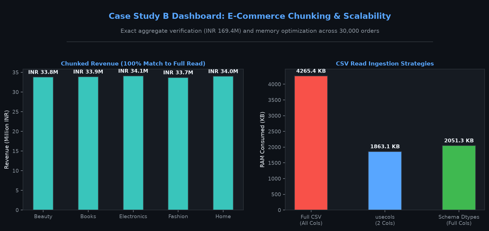
Full Verified Python Pipeline — Chunked Streaming vs Full Load
Scalability Insight: Choti file par chunked processing thoda extra loop overhead leta hai (0.038s vs 0.024s), lekin jab file 20 GB ki hoti hai, to full read crash ho jata hai jabki chunked reading safely aur smoothly finish ho jati hai!
18. 21 Interactive Practice Questions & Capstone Mini-Project
Apne performance engineering aur memory profiling concepts ko solidify karne ke liye niche diye gaye interactive accordions ko click karke open karein.
Part 1: 5 Beginner Conceptual & Syntax Questions
Q1: What is the fundamental difference between df.memory_usage() and df.memory_usage(deep=True)?
Answer: By default (deep=False), Pandas sirf fixed-size C-pointer tables (8 bytes per row) count karta hai. Yeh string aur object columns ki actual memory ko ignore kar deta hai.
Jab aap deep=True pass karte hain, to Pandas har pointer ko follow karke Python heap memory par allocate hue actual strings aur objects ke bytes measure karta hai. Text columns ka true RAM size dekhne ke liye deep=True mandatory hai.
Q2: Why does a standard Python for-loop execute thousands of times slower than vectorized column addition?
Answer: Python loop me Virtual Machine (PVM) ko har row ke liye dynamic type check karna padta hai, temporary row Series/tuple objects allocate karne padte hain, aur function dispatch overhead handle karna padta hai.
Vectorized expressions (e.g. df['a'] + df['b']) direct low-level compiled C arrays par execute hote hain. Modern CPUs ke SIMD registers ek hi clock cycle me 4 se 8 numbers parallel me add kar dete hain bina kisi Python interpreter overhead ke.
Q3: When should a string column NOT be converted to category dtype?
Answer: Jab column ki Cardinality high ho (yani unique values total rows ke muqable bohot zyada hon, e.g. Unique values > 50%). Examples: user_id, email, transaction_id.
High cardinality columns me category index aur integer codes dono store karne padte hain, jisse memory save hone ke bajaye उल्टा badh sakti hai!
Q4: What silent catastrophe occurs if you downcast an integer column containing the value 200 into int8?
Answer: Signed int8 ki maximum allowable limit 127 hoti hai (-128 to 127). Agar aap 200 ko int8 me convert karenge, to Integer Overflow ho jayega aur number wrap hokar negative (e.g., -56) ban jayega! Isse aapke financial ya exam analytics silently corrupt ho jayenge bina kisi crash warning ke.
Q5: What is the most dangerous mistake developers make when implementing chunked CSV reading?
Answer: Saare chunks ko ek Python list me append karna (all_chunks.append(chunk)) aur loop ke baad pd.concat(all_chunks) call karna! Isse poora dataset memory me duplicate ho jata hai aur system turant OOM crash ho jata hai. Sahi tareeqa har chunk se running aggregate nikaalna aur chunk ko discard karna hai.
Part 2: 5 Intermediate Practical Questions
Q6: How can you automatically downcast all numeric columns of a DataFrame safely?
Answer: pd.to_numeric() ke sath select_dtypes loop use karein:
Q7: Why is np.where() hundreds of times faster than df.apply(lambda row: ..., axis=1)?
Answer: df.apply(axis=1) har row ke liye ek Python Series object banata hai aur Python function ko row-by-row invoke karta hai. Jabki np.where(condition, x, y) C-level branch evaluation karta hai jahan boolean condition array aur values memory me contiguous arrays ke roop me process hoti hain.
Q8: How does using usecols in pd.read_csv() improve both load speed and RAM consumption?
Answer: usecols parameter Pandas ke underlying C-parser ko instruct karta hai ki unused columns ko disk read ke waqt hi ignore kar de. Isse CPU type-inference cycles save hoti hain aur unnecessary columns ke liye RAM allocate hi nahi hoti.
Q9: How does Copy-on-Write (CoW) in modern Pandas 2.x prevent redundant memory duplication?
Answer: CoW ke sath sub-setting ya slicing karne par naya memory buffer allocate nahi hota; child DataFrame parent ke buffer ko read-only mode me point karta hai. Naya memory clone sirf aur sirf tab banta hai jab user child DataFrame me kisi cell ko modify (write) karne ki koshish karta hai.
Q10: Why does df.groupby(col, sort=False) speed up aggregation queries on large datasets?
Answer: By default Pandas groupby operations ke final keys ko sort karta hai (lexicographical sorting). Large datasets me sorting ek \(O(K \log K)\) algorithm chalata hai. Passing sort=False is sorting step ko bypass kar deta hai aur direct hash table insertion order return karta hai.
Part 3: 3 Practical Coding Scenarios
Q11: Write a function to profile and print the top 3 memory-hogging columns in any DataFrame.
Q12: Vectorize a complex 3-tier discount calculation without using apply(axis=1).
Q13: Stream a multi-million-row sales CSV in chunks and calculate the global average order value.
Part 4: 5 Multiple Choice Questions (MCQs) with Explanations
Q14: Which data type is safe and optimal for a student marks column whose values range strictly between 0 and 100?
A) float64
B) int64
C) uint8 (0 to 255) or int8 (-128 to 127) (Correct)
D) category
Explanation: Marks 0 se 100 tak bounded integers hote hain. uint8 ya int8 sirf 1 byte per cell lete hain, jo default int64 (8 bytes) ke muqable 87.5% memory save karta hai.
Q15: What is the algorithmic time complexity of searching values in df['id'].isin(set(large_list))?
A) \(O(N^2)\)
B) \(O(N imes M)\) Linear
C) \(O(N imes 1)\) Constant Hash Lookup (Correct)
D) \(O(\log N)\)
Explanation: Python set internal hash table use karta hai. Har row ka lookup \(O(1)\) constant time me evaluate hota hai, jabki list me linear \(O(M)\) scan hota hai.
Q16: Which timing utility is recommended for benchmarking multi-line data pipelines while ignoring wall-clock daylight adjustments?
A) time.time()
B) time.perf_counter() (Correct)
C) datetime.now()
D) time.clock() (Deprecated)
Explanation: time.perf_counter() OS ka highest-resolution monotonic clock use karta hai jo sleep ya system clock updates se affect nahi hota.
Q17: What happens if a value in a Series is not present in the dictionary passed to Series.map(dict)?
A) Raises a KeyError and crashes
B) Replaces the missing value with NaN (Correct)
C) Leaves the original value unchanged
D) Inserts an empty string
Explanation: Series.map() strictly maps keys from the dictionary. Unmapped keys automatically become NaN. Agar aap original values preserve karna chahte hain to s.replace(dict) use karein.
Q18: Which configuration line enables Copy-on-Write behavior in Pandas 2.x?
A) pd.set_copy(True)
B) pd.options.mode.copy_on_write = True (Correct)
C) pd.enable_cow()
D) pd.options.memory.cow = 1
Explanation: pd.options.mode.copy_on_write = True or pd.set_option('mode.copy_on_write', True) activates modern zero-copy lazy mutation.
Part 5: 2 Real-World Debugging Challenges
Q19: Debugging SettingWithCopyWarning — Resolving view vs copy ambiguity safely.
Problem: Code df_sub = df[df['score'] > 50]; df_sub['grade'] = 'Pass' raises SettingWithCopyWarning.
Fix: Either create an explicit independent copy or enable Copy-on-Write:
Q20: Debugging MemoryError — Ingesting a 15 GB CSV file on an 8 GB RAM laptop.
Problem: pd.read_csv("15gb_telemetry.csv") causes MemoryError.
Fix: Combine usecols, explicit downcasted dtype, and chunksize streaming:
Part 6: Capstone Mini-Project — Pandas Performance Lab
Q21: Mini-Project Challenge — Optimize a Full College & E-Commerce Pipeline.
Objective: Niche diye gaye pipeline me raw unoptimized data ko process karein aur verified >60% memory savings aur 100x speedup achieve karein:
19. Master Summary, High-Density Cheat Sheet & What's Next
Aapne Pandas ke sabse crucial industrial discipline Performance & Memory Optimization ko master kar liya hai! Niche diye gaye key takeaways aur 18-row cheat sheet table ko revise karein.
Core Conceptual Takeaways
- Measurement Over Guesswork: Kabhi bhi assumption par code optimize na karein. Hamesha
time.perf_counter()aurdf.memory_usage(deep=True)se true bottleneck identify karein. - Correctness First: Faster code ka koi fayda nahi agar output me precision loss ya integer overflow aa raha ho.
- Vectorization Supremacy: Python loops aur
iterrows()ko hamesha direct vectorized column operations yanp.where()se replace karein (9,000x speedup). - Categorical Power: Low-cardinality text columns (unique values < 5%) ko
categoryme convert karke 98% tak deep RAM save karein. - Safe Downcasting: Bounded integers ko
int8yaint16me downcast karein, lekin range boundaries (overflow) ka dhyaan rakhein. - Chunked Streaming: Datasets jo physical RAM se bade hon unhe
pd.read_csv(chunksize=...)se stream karein aur constant RAM buffer maintain karein. - Modern Copy-on-Write: Pandas 2.x ke CoW feature ko leverage karein taaki defensive memory cloning eliminate ho sake.
High-Density Performance Optimization Cheat Sheet
| Objective / Bottleneck | Recommended Production Syntax | Measured Impact / Benefit |
|---|---|---|
| Measure deep RAM usage | df.memory_usage(deep=True).sum() / 1024**2 |
Reveals actual Python heap memory (in MB). |
| Accurate execution timer | t0 = time.perf_counter(); ...; np.median(timings) |
High-resolution timer; immune to daylight saving changes. |
| Safe integer downcast | pd.to_numeric(df['col'], downcast='integer') |
Downcasts int64 to int8/int16 (75% RAM savings). |
| Safe float downcast | pd.to_numeric(df['col'], downcast='float') |
Downcasts float64 to float32 (50% RAM savings). |
| Repeated text optimization | df['city'] = df['city'].astype('category') |
Dictionary integer encoding (up to 98% RAM savings). |
| Vectorized arithmetic | df['total'] = df['col1'] + df['col2'] |
Direct C SIMD execution (~9,000x faster than loops). |
| Conditional branching | np.where(df['score'] >= 50, 'Pass', 'Fail') |
C-array branching (~560x faster than apply(axis=1)). |
| Multi-condition branching | np.select(conditions_list, choices_list, default=0) |
Vectorized replacement for nested if-elif-else logic. |
| Dictionary code mapping | df['code'].map(dict_lookup) |
Fast compiled C hash lookup. |
| Drop unused cols on read | pd.read_csv(f, usecols=['col1', 'col2']) |
Skips unused columns at disk reader (56% RAM saved). |
| Explicit schema read | pd.read_csv(f, dtype={'qty': 'int8', 'cat': 'category'}) |
Bypasses CPU type inference and saves RAM immediately. |
| Stream massive CSV | for chunk in pd.read_csv(f, chunksize=10000): ... |
Processes 20+ GB files in a bounded ~150 MB RAM buffer. |
| Fast key lookup filter | df['id'].isin(set(allowed_list)) |
Evaluates in \(O(1)\) constant time instead of linear scan. |
| Fast GroupBy aggregation | df.groupby('dept', sort=False)['marks'].mean() |
Skips sorting algorithm and isolates only target column. |
| Enable Copy-on-Write | pd.options.mode.copy_on_write = True |
Eliminates defensive copies; clones only on mutation. |
| Quick file preview | pd.read_csv(f, nrows=5) |
Inspects schema instantly without reading entire file. |
| Targeted deduplication | df.drop_duplicates(subset=['id'], keep='first') |
Hashes only key columns rather than comparing all columns. |
| Fast multi-column fillna | df.fillna({'score': 0, 'status': 'Unknown'}) |
Single-pass imputation across multiple columns. |
15-Term Performance Optimization Glossary
| Term | Definition & Operational Meaning |
|---|---|
| Vectorization | Applying an operation to an entire contiguous array in compiled C/SIMD without Python interpreter loops. |
| SIMD | Single Instruction, Multiple Data — CPU hardware registers processing multiple numbers in 1 cycle. |
| Shallow Memory | Memory scan counting only fixed C-pointer tables, blind to external Python heap objects. |
| Deep Memory | Complete memory traversal (deep=True) measuring actual Python string and object payload. |
| Downcasting | Converting a wide data type (int64) into a compact type (int8) based on value ranges. |
| Integer Overflow | A bug occurring when a value exceeds the maximum limit of an integer type, causing negative wrapping. |
| Categorical Dtype | Dictionary-encoded representation where unique strings are stored once and rows store 1-byte integer codes. |
| Cardinality | The count of distinct unique values in a column relative to the total number of rows. |
| Chunksize | Number of rows read per stream iteration via pd.read_csv() to keep RAM bounded. |
| Copy-on-Write (CoW) | Lazy memory management delaying physical buffer cloning until a DataFrame is mutated. |
| usecols | CSV reader parameter selecting only necessary column names to prevent reading unused data. |
| Out of Memory (OOM) | Operating system crash occurring when process RAM allocation exceeds physical system limits. |
| Warm-Up Run | Initial discarded benchmark run to populate disk caches and compile internal JIT routines. |
| Median Runtime | The middle benchmark value across repeated runs, filtering out background garbage collection pauses. |
| Predicate Pushdown | Filtering rows as early as possible in a data pipeline to minimize downstream compute overhead. |
Congratulations on mastering high-performance data processing! Agle aur aakhri topic Pandas Topic 20: Capstone Project & Production Best Practices me hum poor course ki saari skills ko synthesize karenge: Data Ingestion, Cleaning, Merging, Reshaping, Time Series, aur High-Performance Optimization ko combine karke ek complete production-grade data analytics pipeline build karenge!